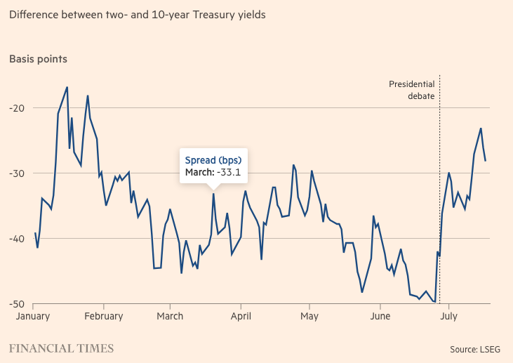

Spy Fiasco; Treasury Bond and the US election
Unlawful foreign agent for Korea in DC
“Former CIA analyst charged with acting as South Korean agent”
Sue Mi Terry, whose latest employer was CFR, was accused in an indictment (unsealed on 7/16) of acting as an unregistered foreign agent for the South Korean government. The actions includes (but are not limited to):
- writing a WaPo column (“The brave”) upon the request from her ‘handler’ in DC (and perhaps another op-ed in Foreign Affairs much earlier)
- passing notes after non-public meeting with the State Department (including Blinken)
- receiving monetary compensations including luxury bags
The indictment indicates that there have been three ‘handlers’ in Korean embassy, all of which were NIS (National Intelligence Service of RoK) agents. The operation seems to have started in 2013, two years after she left CIA.
There’s no hard evidence indicating differing patterns of the operation between different admins, but it seems that during the Moon presidency, the NIS agents were seeking intelligence through Terry, while in Park and Yoon governments, what was asked for seems to be more of cheer-leading.
Given the inconsistency between the foreign policy orientations of the Moon government and Terry, what this incident implies is that NIS could have been pursuing its own missions, independent of the government, when it comes to the NK matters.
- Another possibility, provided that Terry, who was a NK specialist and not necessarily a high-profile foreign policy person in DC, might not have had whole a lot of critical information to offer to begin with, is that the NIS handler was desperate for any intel to ‘brag about’ so as to justify their and their operation’s existence. If this is the case, it would be quite disappointing, not only because it reflects the Korean bureaucratic manerism creeping over the most important policy realm but also because it reveals that a high-ranking national intelligent officer does not have a direct contact with the State department people and instead has to rely on a third-party former-CIA analyst. Itis pretty sad. So much for the ironclad alliance.
Probably a huge blow to the DC think-tank communities on Korea.
why did they love sushi restaurants so much?
Market reaction to Trump: treasury boand
“Investors revive ‘Trump trade’ in bet on US bonds”
“The growing prospect of Donald Trump winning the US presidential election in November has helped revive a popular hedge fund bet on Treasury yields”
The market is betting on the short-term treasury bonds as Trump’s “tax-cutting and pro-trade tariff agenda could eventually lead to higher inflation and a greater supply of longer-dated government bonds.” The expectation is that the long-term bonds would outperform the short-term bonds.

- “[T]he bet — known in industry jargon as a “steepener” because of the expected move in the yield curve — has paid off, with the two-year yield falling by roughly double the drop in the 10-year. Prices move inversely to yields.”